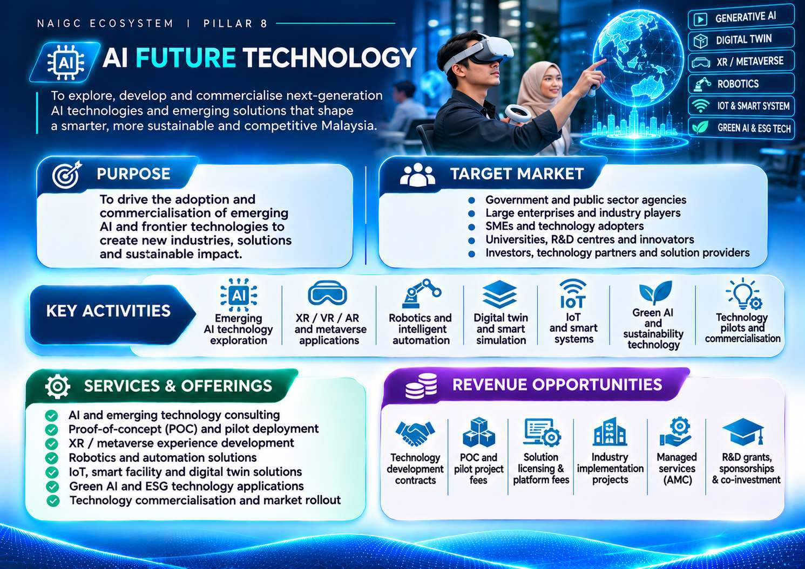

NAIGC
Malaysia AI Generation Centre
SYS//NODE.08 // ONLINE
←
HUB UTAMA
SYS//NODE.08 • STRATEGIC PILLAR 08
AI FUTURE TECHNOLOGY
To explore, develop and commercialise next-generation AI technologies and emerging solutions that shape a smarter, more sustainable and competitive Malaysia.
PURPOSE & OBJECTIVES
To pioneer the exploration and commercialisation of emerging frontier technologies—including robotics, digital twins, XR, and green AI—propelling Malaysia into global technological leadership.
TARGET MARKET
- Forward-looking enterprises adopting Industry 4.0 automation
- Government agencies leading national smart infrastructure and ESG agendas
- Robotics, IoT and autonomous hardware manufacturers
- Pioneering tech investors and deep-tech venture syndicates
- Smart city developers and clean energy/sustainability consortia
KEY ACTIVITIES & OPERATIONS
Robotics & Automation
Developing autonomous mobile robots, robotic process arms, and drone logistics.
Digital Twin & Simulation
Real-time 3D virtualization of urban spaces, manufacturing plants and logistics hubs.
XR / AR / Metaverse Solutions
Spatial computing, mixed-reality industrial training, and immersive telepresence.
Green AI & ESG Tech
Developing energy-efficient AI architectures, smart grid balancing and carbon tracking.
Frontier Pilot Deployments
Testing next-generation multimodal agent swarms in actual production environments.
SERVICES & OFFERINGS
- Strategic Frontier Technology Consulting & Horizon Scanning
- Robotics Integration & Autonomous Systems Deployment
- Industrial Digital Twin Architecture & Real-Time Telemetry Modelling
- Extended Reality (XR) & Immersive Simulation Development
- IoT Sensor Networks, Smart Facilities & Edge AI Processing
- Green AI Optimization & ESG Environmental Impact Reporting
REVENUE & VALUE OPPORTUNITIES
Robotics & Hardware Integration
Digital Twin Platform Licensing
Green AI & ESG Implementation
Strategic Frontier Venture Grants
OFFICIAL NAIGC STRATEGIC ROADMAP • PILLAR 08
NATIONAL ARCHIVE • AUTHORISED DOCUMENT

SYS//CORE ONLINE • 8 ECOSYSTEM NODES OPERATIONAL • MALAYSIA AI GENERATION CENTRE